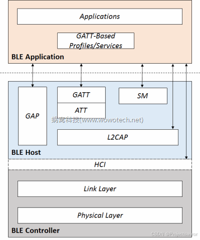
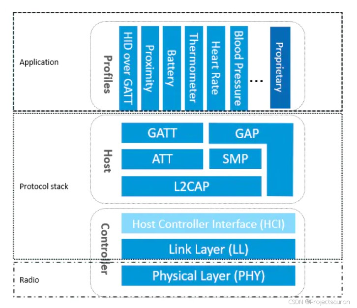
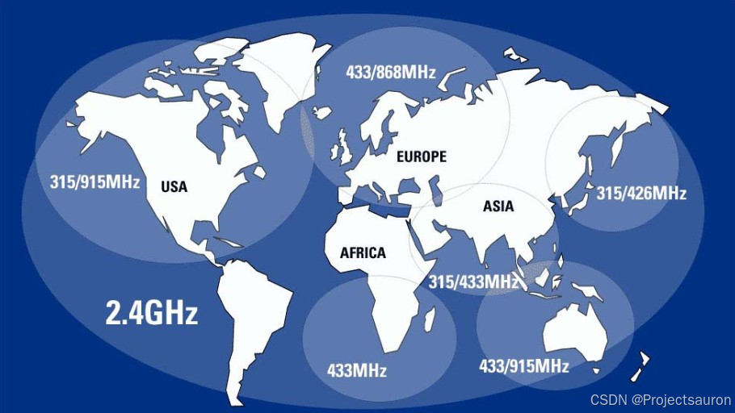
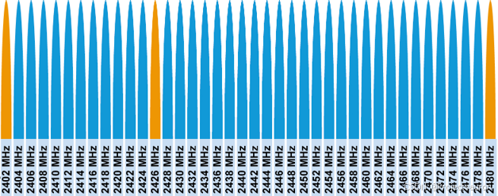
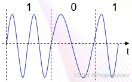
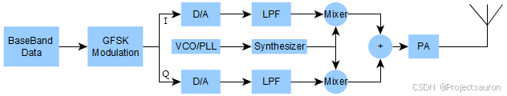
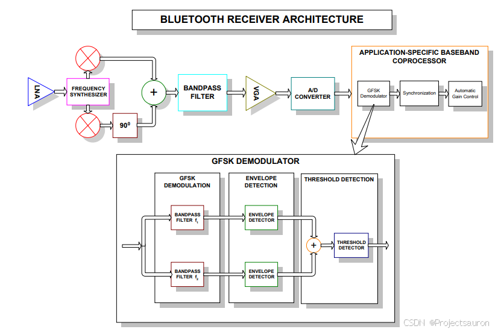
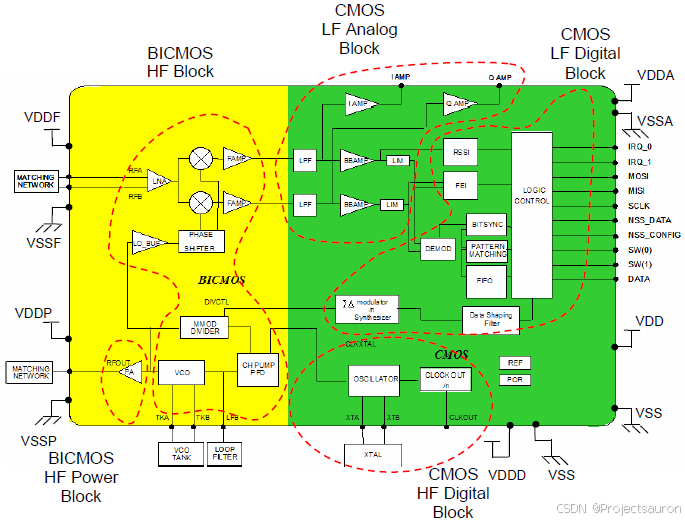

BLE 协议之物理层
@toc

一、概述

物理层（Physical Layer）是 BLE 协议栈最·底层，它规定了 BLE 通信的基础射频参数，包括信号频率、调制方案等。
BLE 工作频率是 2.4GHz，它使用 GFSK 频率调制，并使用跳频机制来解决频道拥挤问题。
BLE 5 的物理层有三种实现方案，分别是：
- 1M Sym/s 的无编码物理层
- 2M Sym/s 的无编码物理层
- 1M Sym/s 的编码物理层
其中 1M Sym/s 的无编码物理层与 BLE v4 系列协议的物理层兼容，另外两种物理层则分别扩展了通信速率和通信距离。
二、Physical Channel
1、物理通道
任何一个通信系统，首先要确定的就是通信介质（物理通道，Physical Channel），BLE 也不例外。在 BLE 协议中，通信介质的定义是由 Physical Layer 负责。
大多数无线通信的频段需要申请授权才可以使用，不同地区开辟了少量免授权频段，只要产品满足当地无线电规范，即可免授权使用。下图展示了全球免授权的频段及其分布：

图中 2.4GHz 的频段很强势，覆盖了整个地图，是专为工业（Industrial）、科学（Scientific）和医学（Medical）三个机构使用，故称为
ISM 频段。全球范围都可以免授权使用 ISM 频段。
2.4GHz 频段信号有明显的优缺点，优点是免费、技术成熟，缺点是频段拥挤、信号传播特性差、遇水衰减。目前除了蓝牙信号外，WIFI、ZigBee、无线键盘、无线玩具甚至微波炉都工作在这个频段。由此，当一个空间内同时运行着多个无线设备时，BLE 就很容易受到干扰，由此提出了下面将提到的调频技术来抗干扰。
Physical Layer 是这样描述 BLE 的通信介质的：
- BLE 属于无线通信，则其通信介质是一定频率范围下的频带资源（Frequency Band）
- BLE 的市场定位是个体和民用，因此使用免费的 ISM 频段 （频率范围是 2.400-2.4835 GHz）
- 为了同时支持多个设备，将整个频带分为 40 份，每份的带宽为 2MHz ，称作 RF Channel 。
经过上面的定义之后， BLE 的物理通道划分已经明了了！
$$
频点 ( f ) = 2402 ( M H z ) + k ∗ 2 ( M H z ) , k = ( 0…39 )
$$
每个 Channel 的带宽为 2MHz ，如下图：

2、物理通道的细分
上面我们已经知道了，物理层被划分为了40个赛道，由于传输数据量的不同，为了更加充分利用好物理资源，进一步对通道进行了划分：
40 个 Physical Channel 物理通道分别划分为 3 个广播通道（advertising channel），和 37 个数据通道（data Channel）。
- 对于数据量少，发送不频繁，时延不敏感的场景，使用广播通道通信。
- 例如一个传感器节点（如温度传感器），需要定时（如1s）向处理中心发送传感器数据（如温度）。
- 针对这种场景，BLE 的 Link Layer 采取了一种比较懒的处理方式——广播通信
- 对于数据量大，发送频率高，时延较敏感的场景，使用数据通道。
- BLE 为这种场景里面的通信双方建立单独的通道（data channel）。这就是连接（connection）的过程。

同时，为了增加信道容量，增大抗干扰能力，连接不会长期使用一个固定的 Physical Channel，而是在多个通道（如 37 个）之间随机但有规律的切换，这就是 BLE的跳频（Hopping）技术 。
一个简单的跳频算法是：$F(n+1) = [F(n) + hop] % 37$，其中 hop 参数为物理层自己设定的跳频参数。
实际中使用自适应跳频算法来更新通信信道。
自适应跳频的工作机制是，如果某个信道拥挤则做上标记，工作时维护一张信道表以记录各信道的拥挤情况，并将拥挤信道映射到可用信道中，然后结合上述简单跳频算法共同完成信道选择。假如简单跳频算法结果指向一个拥挤信道，则进一步跳转到它映射的可用信道上，从而实现数据通信总是工作在可用信道上。
三、调制
1、调制方式
物理层定义了两种调制方式。
一种方案采用高斯频移键控（GFSK），具有 1MSym/s 的符号速率。第二种方式是与第一种相似，但是具有 2MSym/s 的符号速率。
第一种方式又分成两种类型：
LE 1M Uncoded PHY。该方式的比特率为 1Mb/s，它是 BLE v4 版本协议保持兼容。LE 1M Coded PHY。该方式对报文进行编码，使接收端收到的报文具有前向纠正的能力，在相同误码率条件下，能够显著降低误码重传次数，从而提高通信速率。 如果采用8符号编码，比特率为 125kb/s，如果采用 2 符号编码，比特率为 500kb/s。
LE 1M Uncoded PHY 是 BLE 协议强制要求实现的物理层，而 LE 1M Coded PHY 则是可选方案。
这两种实现方式符号速率都是 1MSym/s。
符号速率中的“符号”是指单次采样所得到的信息，这个信息可能包含多个比特，也可能多个信息等效于一个比特。比如一个电压幅度调制系统中，用 +5V 表示 11b， +2V 表示 10b， -2V 表示 01b， -5V 表示 00b，那么采样一次电压可以获得两个比特信息，此时比特率是符号速率的两倍。在 LE 1M Coded PHY 机制中，用 8 个符号表示 1 个比特，此时比特率是符号速率的 1/8。
第二种物理层实现方式为：
LE 2M Uncoded PHY。该方案的比特率为 2Mb/s，是可选的实现方式。
官方文档使用 LE 1M PHY、LE Coded PHY、LE 2M PHY 来表示以上三种不同的物理层实现方式：
| 物理层 | 调制方式 | 编码方案（报头部分） | 编码方案（有效载荷） | 比特率 |
|---|---|---|---|---|
| LE 1M PHY | 1Msym/s 方式 | 无编码 | 无编码 | 1Mb/s |
| LE 2M PHY | 2Msym/s 方式 | 无编码 | 无编码 | 2Mb/s |
| LE Coded PHY | 1Msym/s 方式 | 编码 S=8 | 编码S=8; 编码S=2 |
125kb/s; 500kb/s |
表中的 S=8 表示 8 个符号编码成 1 个比特
2、GFSK
频率调制是将低频数据信号加载到高频载波上，数据的变化反映为调制波频率的疏密变化，如下图所示：

数字化的信号仅有 0、1 变化，在调制时，可以定义载波频率正向偏移视为 1，负向偏移视为 0。这种调制方式称为“频移键控（FSK）”。数字信号发生 0/1 变换时，会产生大量噪声，引入高斯滤波器能够延展 0/1 变换时间，从而降低噪声。这种做法称为“高斯频移键控（GFSK）”。
GFSK 技术成熟，实现简单，适合低功耗BLE的需求。
BLE 协议规定：
- 中心频率正向偏移大于等于 185kHz 视为比特 1；
- 负向偏移大于等于 185kHz 视为比特 0。
例如：如果选择 2402MHz 作为中心频率，比特 1 的频率应为 2402.185MHz， 比特 0 的频率应为 2401.815MHz。
四、发射机

图中信号从左向右流动，基带信号经过 GFSK 调制分成同相（I 信号）和正交（Q 信号）两路信号，再依次经过 DA 转换和低通滤波器，然后利用频率合成器进行频率上转换，再将两个信号分量合成后通过 PA 放大将信号推送到天线上。
I/Q 相位分量并行操作用以抑制镜像频率，PLL 驱动的频率合成器可以产生稳定和精确的频率信号，其他的滤波和变换则比较容易理解。
| 最小输出功率 | 最大输出功率 |
|---|---|
| 0.01mW (-20dBm) | 100mW (+20dBm) |
五、接收机
接收过程是发射过程的逆过程，但相比于发射机而言更加复杂。

蓝牙信号进入到芯片内部，首先经过低噪声放大器（LNA），仍然是分成 I/Q 两个相位分量，再通过带通滤波器，使用 VGA（Variable Gain Amplifier）进行放大，最后转成数字信号传入处理器。
BLE协议对于编码型和非编码型物理层给出了不同的接收灵敏度要求：
| 物理层类型 | 接收灵敏度（dBm） |
|---|---|
| LE Uncoded PHY | ≤ -70 |
| LE Coded PHY with S=2 coding | ≤ -75 |
| LE Coded PHY with S=8 coding | ≤ -82 |
市面上的 BLE 芯片大多都宣称达到 -90dBm 甚至更低的接收灵敏度。
在理想的条件下，假设发射机输出功率是 0dBm，接收机灵敏度是 -90dBm，发射机输出信号经过一段路径到达接收机，功率衰减到 -90dBm，意味着这段路径上的路径损耗等于 90dB。如果输出功率是 20dBm，当衰减至 -90dBm 时，路径损耗就是 110dB。
路径损耗与通信距离有如下相关性：
$$
path loss = 40 + 25 × log(distance)
$$
见下：
| 路径损耗(path loss) | 通信距离(distance) |
|---|---|
| 50dB | 2.5m |
| 60dB | 6.3m |
| 70dB | 16m |
| 80dB | 40m |
| 90dB | 100m |
| 100dB | 250m |
| 110dB | 630m |
当发射功率为默认 0dBm，接收灵敏度为 BLE 协议规定的最小值 -70dBm，那么可实现的最大距离为 16m，这也是许多文档认为 BLE 是一个 10 米范围的通信技术的原因。考虑到大多数 BLE 芯片的接收灵敏度都优于 -90dBm，实际通信距离应大于 10米。
六、收发机
前面介绍了发射机和接收机，在实际的 BLE 芯片中，接收机和发射机放在同一个电路中，称为收发机（Transceiver），下图是一个 2.4GHz 产品框图，有实际的参考价值：
